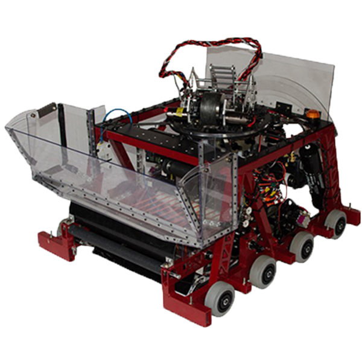

<div class='full parallax' style='background-image: url(images/robots/2017robot2.jpg); color: #fff;'>
    <div class='row'>
        <div class='twelve columns'>
            {% include section-header.html title="Perseus" color="#fff" tagline="2017 FIRST STEAMWORKS Robot" class="big" %}
        </div>
    </div>
    <div class='four spacing'></div>
</div>

<div class="media-object">
  <div class="media-object-section right">
    <div class="thumbnail">
      
    </div>
  </div>
    <p> </p>
{% include robot-header.html title="Facts" %}
    
    <ul class="no-bullet">
        <h3 >   Drive Train:</h3>
        <ul>
            <h6> -Six 4" Colson wheels with two 4" Omni wheels to assist with climbing</h6>
            <h6>  -High gear: 24 ft/sec</h6>
            <h6>  -Low gear: 7 ft/sec</h6>
        </ul>
        <h3>    Manipulators</h3>
        <ul>
            <h6> -Ground pick up for gears</h6>
            <h6> -Turret auto-targets the boiler</h6>
            <h6> -Hopper fuel intake</h6>
            <h6> -Fuel storage holds about 30 fuel</h6>
        </ul>
    

    </ul>